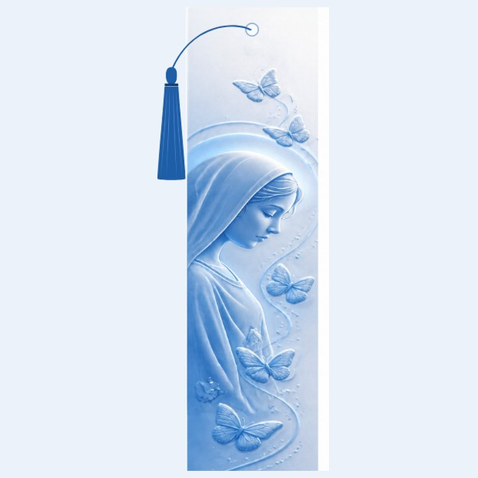
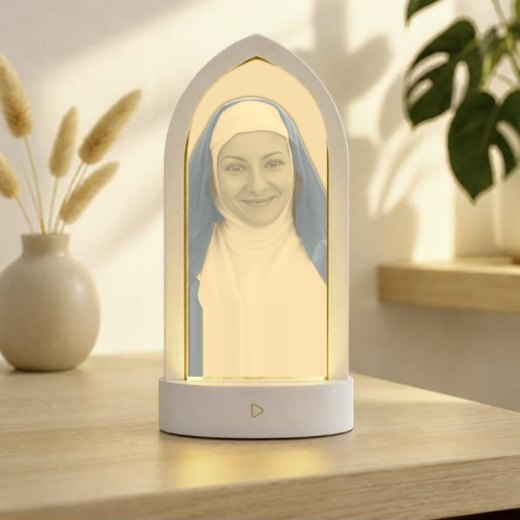
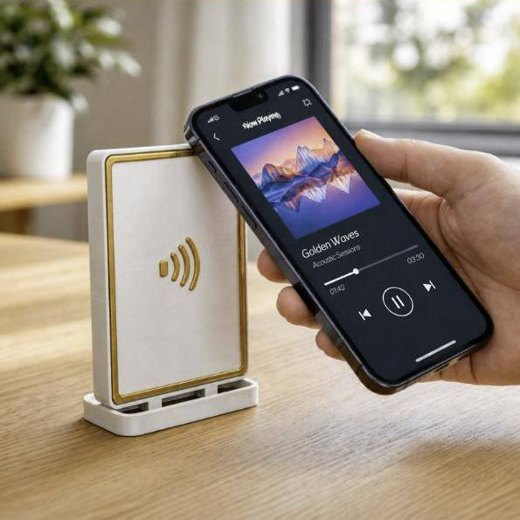

Luz e Prece
Música, leitura e um momento de paz
"Tua luz nos guia, estrela da paz…"
Quando eu cruzo a porta desta casa,
deixo lá fora o peso da dor.
Sinto a calma que aqui me abraça
e o silêncio falando de amor.
É um refúgio pra minha alma aflita
onde o Mestre Jesus
nos convida a mudar.
Sinto a brisa suave soprar
trazendo consolo, vindo me curar…
Tua luz nos guia, estrela da paz,
o teu nome, Joanna, esperança nos traz.
Mentora amiga, flor do jardim,
ensina o amor que não tem fim.
No CEJA encontrei o meu lugar,
tua mão estendida a me levantar.
Nos caminhos do bem,
na caridade e na fé,
seguimos os passos
do Homem de Nazaré.
Com a tua presença a nos orientar…
Tua luz nos guia, estrela da paz,
o teu nome, Joanna, esperança nos traz.
Mentora amiga, flor do jardim,
ensina o amor que não tem fim.
Obrigado, Joanna, por cuidar de mim.
Obrigado, Joanna, por cuidar de mim.
Abraço de Luz · Fusão de Fé · para Joanna de Ângelis e o CEJA
Escolha a prece, toque em ouvir e acompanhe o texto. Para o Evangelho no Lar: abra com a Prece para o Evangelho no Lar, leia um trecho de O Evangelho Segundo o Espiritismo (aba LIVROS) e encerre com a Prece de gratidão.
Allan Kardec (1857): as 1.019 perguntas e respostas sobre Deus, a alma, a vida depois da morte e as leis morais. Completo, para ler aqui mesmo.
Carregando…
Allan Kardec (1864): os ensinos morais de Jesus explicados à luz do Espiritismo. O livro do Evangelho no Lar.
Por enquanto abre no Kardecpedia, do Instituto de Divulgação Espírita Allan Kardec (IDEAK). Em breve, também dentro desta página.
Cinco minutos para a prece. Acompanhe o círculo: ele cresce quando você inspira e diminui quando você solta o ar.

Vela Eterna · Mãos em preceR$ 210 · com esta página de prece

Marcador InteligenteQR Code e chip NFC

Retrato de LuzJoanna de Ângelis
Suporte para O Evangelholeitura no altar de casa

Plaquinha Abraço de Luzum presente de luz
Produtos da Fusão Lab 3D. Todas abrem esta mesma página ao encostar o celular ou ler o QR Code.
CONHEÇA NO SITESalve esta página na tela do celular para abrir a oração mesmo longe da vela.